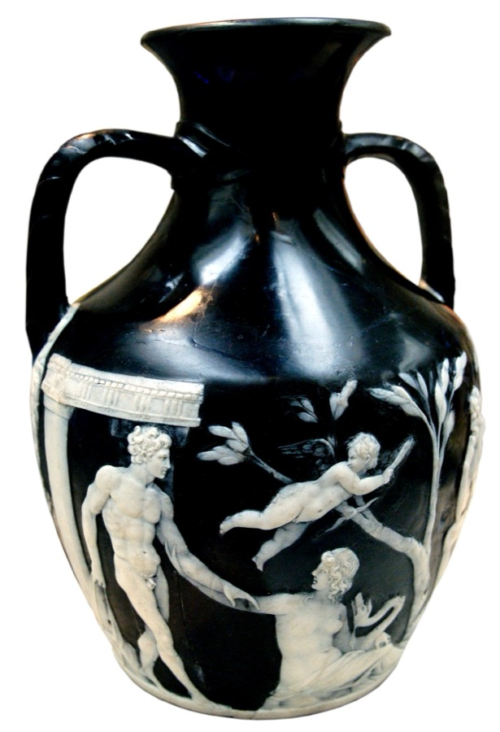

CHRONICLE
Friday 3 July · Edition № 4

D
Lot 04 · Relic
The Portland Vase
Sealed · 6:41
Named from the second sliver — cameo glass, Rome, c. 25 AD. Tomorrow it returns to the vaults.
Smashed by a drunk in 1845; rebuilt three times since. Handle with care.
Lot 01
Thread
Sixteen clues, four hidden families.
Viewing open
Lot 02
Lifeline
Born here, died there. Name the figure.
Round 4 of 10
Lot 03
Face Value
A famous face, one sliver at a time.
Unviewed
The Permanent Collection ›
Viewing closes at midnight.
☾